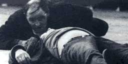

I can't believe the news today
Oh, I can't close my eyes
And make it go away
How long...
How long must we sing this song?
How long? How long...
'cause tonight...we can be as one
Tonight...
Broken bottles under children's feet
Bodies strewn across the dead end street
But I won't heed the battle call
It puts my back up Puts my back up against the wall
Sunday, Bloody Sunday
Sunday, Bloody Sunday
Sunday, Bloody Sunday
And the battle's just begun
There's many lost, but tell me who has won
The trench is dug within our hearts
And mothers, children, brothers, sisters
Torn apart
Sunday, Bloody Sunday
Sunday, Bloody Sunday
How long...
How long must we sing this song?
How long? How long...
'cause tonight...we can be as one
Tonight...tonight...
Sunday, Bloody Sunday
Sunday, Bloody Sunday
Wipe the tears from your eyes
Wipe your tears away
Oh, wipe your tears away
Oh, wipe your tears away
(Sunday, Bloody Sunday)
Oh, wipe your blood shot eyes
(Sunday, Bloody Sunday
Sunday, Bloody Sunday (Sunday, Bloody Sunday)
Sunday, Bloody Sunday (Sunday, Bloody Sunday)
And it's true we are immune
When fact is fiction and TV reality
And today the millions cry
We eat and drink while tomorrow they die
(Sunday, Bloody Sunday)
The real battle just begun
To claim the victory Jesus won
On...
Sunday Bloody Sunday
Sunday Bloody Sunday...
